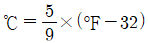
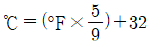
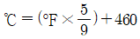
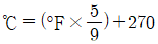
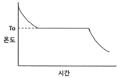
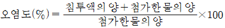
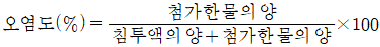
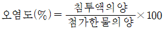
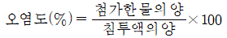
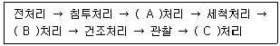

침투비파괴검사기사 (2021-03-07 기출문제)
1과목: 비파괴검사 개론
1. 다음 중 레이저(laser)가 필요한 비파괴검사법은?
- 입체 방사선투과검사(Stereo radiography)
- 자속누설검사(Magnetic flux leakage test)
- 스펙클 간섭법(Speckle interferometry)
- 광섬유 보아 스코프(Fiber optic borescope)
(정답률: 54%)

2. 방사선투과시험에서 현상액의 온도가 규격에 화씨(°F)로 되어 있어 섭씨온도로 변환시켜 측정된 값과 비교하고자 한다. 다음 중 화씨온도(°F)를 섭씨온도(℃)로 변환하는 식으로 옳은 것은?




(정답률: 75%)
3. 400℃이상의 온도에서 일정 하중조건하에서 장시간 사용 했던 재료에 발생하는 파괴로, 일반적으로 모재에 많이 발생하는 균열은?
- 열간균열
- 피로균열
- 응력부식균열
- 크리프균열
(정답률: 54%)
4. 다음 중 다른 비파괴검사방법에 비해 초음파탐상검사 방법의 장점을 설명한 것은?
- 초음파탐상검사는 방사선투과검사에 비해 균열 등 미세한 결함에 대해 감도가 높다.
- 다른 비파괴검사에 비해 빔에 평행한 방향의 결함은 쉽게 검출되지만 금속의 결정립 크기에 영향을 받기 쉽다.
- 다른 비파괴검사에 비해 검사자의 많은 지식과 경험이 요구된다.
- 다른 비파괴검사에 비해 주로 탐촉자와 시험체간에 직접 접촉에 의하여 감도가 크게 변한다.
(정답률: 74%)
5. 다음 중 와전류탐상시험법으로 검사할 수 없는 재료는?
- 동관(Copper tube)
- 알루미늄 합금
- PVC 파이프
- 텅스텐 와이어
(정답률: 73%)
6. 주철에서 흑연화를 방해하는 원소는?
- Cr
- Si
- Ni
- Co
(정답률: 48%)
7. 다음 중 Mg의 특성을 설명한 것으로 틀린 것은?
- 융점은 약 1107℃ 이다.
- 비강도가 커서 항공우주용 재료로 사용된다.
- 감쇠능이 주철보다 커서 소음방지구조재로서 우수하다.
- 상온에서 100℃까지는 장시간에 노출되어도 치수의 변화가 거의 없다.
(정답률: 59%)
8. 강 중의 잔류 오스테나이트를 마텐자이트로 변태시킬 목적의 열처리는?
- 템퍼링 처리
- 마템퍼링 처리
- 서브제로 처리
- 오스템퍼링 처리
(정답률: 47%)
9. 고속도로공구강인 SKH51의 주요 합금 첨가 원소로 옳은 것은?
- Co – Be – W - Cr
- N – Cr – Ni - Co
- W – Cr – Mo - V
- Co – Ni – W – Sn
(정답률: 60%)
10. 일정한 지름의 강철 볼을 일정한 하중으로 시험편 표면에 압입한 다음, 하중을 제거한 후에 볼 자국의 표면적으로 하중을 나눈 경도값을 HBS 또는 HBW로 표기하는 경도기는?
- 브리넬 경도기
- 로크웰 경도기
- 쇼어 경도기
- 비커즈 경도기
(정답률: 62%)
11. 피로강도를 증가시키는 방법으로 옳은 것은?
- 표면 거칠기를 증가시킨다.
- 표면층의 강도를 감소시킨다.
- 가능한 한 노치를 많게 한다.
- 표면에 쇼트 피닝 처리를 한다.
(정답률: 69%)
12. 합금의 조직 미세화 처리 목적으로 용융금속에 금속 나트륨을 첨가한 합금계는?
- Cu – Zn 계
- Cu - Ni 계
- Al - Sn 계
- Zn – Al - Cu 계
(정답률: 45%)
13. 강에 포함되어 적열취성의 원인이 되는 성분은?
- Cu
- S
- P
- H
(정답률: 63%)
14. 알루미늄의 일반적인 성질이 아닌 것은?
- 가공성이 좋다.
- 가볍고 내식성이 있다.
- 순도가 높을수록 연질이 된다.
- 알루미늄 내 Cu는 도전율을 향상시킨다.
(정답률: 61%)
15. 순수한 마그네슘을 액체 상태로부터 상온까지 서서히 냉각시키면서 시간에 따른 온도변화를 측정한 그래프가 다음과 같을 때, To가 의미하는 것은?

- 마그네슘의 비등점
- 마그네슘의 응고점
- 마그네슘의 액화점
- 마그네슘의 자기변태점
(정답률: 60%)
16. 강의 용착 금속 결함 중 은점(Fish eye) 발생의 가장 큰 원인이 되는 가스는?
- 질소
- 수소
- 헬륨
- 이산화탄소
(정답률: 64%)
17. 피복 아크 용접에서 아크전압이 20V, 아크전류는 150A, 용접속도가 15cm/min 일 때 용접 입열은 몇 Joule/cm 인가?
- 120
- 750
- 12000
- 75000
(정답률: 62%)
18. 볼트나 환봉 등을 강판이나 형강 등에 직접 용접하는 방법으로 모재와 볼트 사이에 순간적으로 아크를 발생시키는 용접방법은?
- 스터드 용접
- 테르밋 용접
- 서브머지드 아크 용접
- 가스 텅스텐 아크 용접
(정답률: 56%)
19. 다음 중 피복재의 역할로 틀린 것은?
- 아크를 안정시킨다.
- 용착금속을 보호한다.
- 용착금소의 냉각속도를 빠르게 한다.
- 용착금속에 필요한 합금원소를 첨가시킨다.
(정답률: 61%)
20. 용접 중에 아크를 중단시키면 중단된 부분이 오목하거나 납작하게 파진 모습으로 남는 것은?
- 기공
- 엔드 탭
- 선상 조직
- 크레이터
(정답률: 60%)
2과목: 침투탐상검사 원리
21. 침투탐상검사에서 침투에 영향을 미치는 요인이 아닌 것은?
- 침투액의 접촉각
- 침투액의 적심성
- 침투액의 색깔
- 침투액의 표면장력
(정답률: 75%)
22. 침투탐상시험에서 모세관 현상의 표면장력 단위로 옳은 것은?
- N/m
- N/m2s
- J/m3
- μW/cm2
(정답률: 52%)
23. 특별한 침투탐상검사 방법으로 전도성이 없는 재료의 열린 결함에 약간의 전도도가 있는 액체를 침투시키고, 액체를 제거한 다음 현상제 역할을 하는 탄산칼슘의 미립자를 사용하는 침투탐상방법은 무엇인가?
- 수세성 침투탐상검사
- 하전입자법
- 용제제거성 침투탐상검사
- 여과입자법
(정답률: 56%)
24. 침투탐상검사에서 현상제를 사용하지 않는 무현상법의 설명으로 틀린 것은?
- 미세 분말에 의한 모세관현상 이용
- 시험체 가열로 결함 속의 침투액과 공기 팽창 이용
- 시험체 가열로 결함 속의 침투액의 자기 확장을 이용
- 기계적 힘으로 결함부를 압축 응력시켜 결함 체적이 축소됨을 이용
(정답률: 44%)
25. 용접부 검사 시 이원성 형광침투탐상검사에 일반적으로 적용하지 않는 현상 방법은?
- 건식 현상법
- 비수성 습식 현상법
- 속건식 현상법
- 무현상법
(정답률: 45%)
26. 검사결과의 신뢰성과 관련되는 인자가 아닌 것은?
- 탐상장치와 설비
- 탐상제
- 검사절차서
- 탐상면의 상태
(정답률: 37%)
27. 침투탐상검사의 현상방법 중 습식현상제의 적용 방법으로 가장 적합한 것은?
- 침지
- 배액
- 붓칠
- 흘림
(정답률: 50%)
28. 저합금강 용접부의 침투탐상검사 시 적절한 검사 시기는?
- 고장력강은 용접 후 바로 실시
- 최종검사는 열처리 후 실시
- 개선면은 실시할 필요가 없음
- 용접부의 덧살 제거 시에는 덧살 제거 전 실시
(정답률: 73%)
29. 다음 침투탐상검사 중 의사지시가 나타나기 가장 쉬운 경우는?
- 유화시간이 길고, 건조온도가 지나치게 높은 경우
- 검사체의 형상이 복잡하고, 표면이 거친 경우
- 침투시간이 길고, 세척처리가 지나친 경우
- 검사체의 형상이 단순하고, 표면이 평평한 경우
(정답률: 61%)
30. 침투탐상시험에서 후처리 시, 현상제의 제거를 위해 일반적으로 사용하는 방법이 아닌 것은?
- 솔질 세척
- 전열 세척
- 공기분사 세척
- 수 세척
(정답률: 55%)
31. 침투탐상시험 시 세라믹의 기공에 의한 불연속지시는 금속의 기공에 의한 불연속지시와 비교하여 어떻게 나타는가? (단, 다른 검사 조건은 모두 동일하다.)
- 금속의 기공에 의한 지시보다 더욱 선명하게 나타난다.
- 재료에 무관하게 금속의 기공에 의한 지시와 거의 동일하게 나타난다.
- 금속의 기공에 의한 지시보다 훨씬 흐리게 나타난다.
- 균열의 지시모양처럼 선형으로 예리하게 나타난다.
(정답률: 48%)
32. Kr-85를 이용하는 침투탐상검사 방법으로, 일반적인 침투탐상검사에서 사용되는 현상제 대용으로 공업용 X-필름을 시험체에 부착하여 감광된 필름상을 보고 결함지시의 유무를 알 수 있는 침투탐상방법은?
- 휘발성 액체법
- 기체 방사성 동위원소법
- 역형광법
- 여과 입자법
(정답률: 54%)
33. 알칼리 세착방법으로 틀린 것은?
- 시험체 표면의 스케일링 등을 제거하는데 유용하다.
- 알칼리 세척제는 계면 활성제가 포함되어 있는 화합물이다.
- 사용 후 충분히 가열 건조시켜야 한다.
- 페인트나 유지류의 제거에 효과적이다.
(정답률: 48%)
34. 담금법으로 침투액 적용 시 배액 과정이 가장 중요한 시험법은?
- 용제제거성 염색침투탐상시험
- 용제제거성 형광침투탐상시험
- 후유화성 형광침투탐상시험
- 수세성 염색침투탐상시험
(정답률: 43%)
35. 침투액의 구비조건으로 옳은 것은?
- 낮은 인화점이 좋다.
- 낮은 휘발성이 좋다.
- 낮은 발화점이 좋다.
- 높은 점성이 좋다.
(정답률: 63%)
36. 액체 침투탐상검사 시 다음 표면조건 중 검사의 질을 저하시키는 조건과 가장 거리가 먼 것은?
- 젖은 표면
- 거친 표면
- 기름을 바른 표면
- 매끄러운 표면
(정답률: 68%)
37. 침투탐상검사에서 침투제의 침투속도에 가장 크게 영향을 미치는 물리적 특성의 조합은?
- 표면장력과 점성
- 점성과 휘발성
- 휘발성과 인화성
- 적심성과 휘발성
(정답률: 68%)
38. 다음 중 침투액이 불연속 부위로 들어가는 현상과 가장 관계가 깊은 것은?
- 침투제의 비중
- 침투제의 점성
- 침투제의 불활성
- 모세관 침투력
(정답률: 61%)
39. 침투제를 균열이나 개구부로 침투시키고, 균열속의 침투제를 바깥으로 나오게 하여 불연속의 가시성을 높이는 침투 메커니즘인 모세관 현상에 영향을 주는 물리적 현상은?
- 삼투압
- 적심성
- 비중
- 점도
(정답률: 51%)
40. 액체침투탐상 시험에서 감도나 분해능이 높고 현상과 기록을 동시에 할 수 있는 현상법은?
- 무현상법
- 속건식 현상법
- 습식현상법
- 플라스틱필름 현상법
(정답률: 62%)
3과목: 침투탐상검사 시험
41. 압축공기 또는 충전된 가스 압력을 이용하여 침투액을 도포하는 방법은?
- 분무법
- 담금법
- 솔질법
- 배액법
(정답률: 70%)
42. 후판 용접부의 용접전 검사로서 용접 홈면(개선면)에 대하여 침투탐상검사를 할 때 검출대상 불연속이 아닌 것은?
- 균열
- 기공
- 용입부족
- 슬래그 개재물
(정답률: 43%)
43. 침투액의 온도가 높아져서 휘발성분이 증발함에 따라 일어나는 현상이 아닌 것은?
- 형광 특성이 높아진다.
- 수분 함유량이 달라진다.
- 현상제 적용 시 집중현상이 발생한다.
- 침투액의 점도가 증가하여 침투속도가 늦어진다.
(정답률: 47%)
44. 수세성 형광침투액 및 건식현상제를 사용하여 침투탐상시험을 할 경우 자외선조사장치가 반드시 필요한 시기는?
- 침투 및 세척단계
- 세척 및 현상단계
- 현상 및 관찰단계
- 세척 및 관찰단계
(정답률: 44%)
45. 유화처리에 대한 설명 중 틀린 것은?
- 점성이 높은 유화제는 비교적 빠른 유화시간을 적용한다.
- 침적법으로 물베이스 유화제를 적용할 경우 5~10% 정도의 농도 범위로 한다.
- 유화제 적용은 대개 침적법으로 하는 것이 일반적이다.
- 유화제 적용법 중 분무법은 유화제를 균일하게 적용하는 것이 어렵다.
(정답률: 34%)
46. 후유화성 형광 침투탐상검사 시 세척단계에서 가장 적절한 방법은?
- 침투액이 완전히 유화되기 전에 세척한다.
- 침투액이 완전히 유화된 후에 세척한다.
- 잉여 침투액이 제거된 후 세척작업을 중단한다.
- 110°F 이상의 고온으로 세척한다.
(정답률: 41%)
47. 다음 중 이상지시의 발생 원인이 아닌 것은?
- 부주의한 세척
- 검사대위에 떨어져 있는 침투제
- 억지 끼워 맞춤에 의한 틈새
- 현상제에 침투제가 오염되어 있는 경우
(정답률: 49%)
48. 수세성 침투액에 대한 물의 오염을 측정하는 계산식으로 옳은 것은?




(정답률: 51%)
49. 침투탐상검사 시 현상제의 특성으로 옳지 않은 것은?
- 미세한 입자모양을 가져야 한다.
- 흡수 작용이 높은 재료이어야 한다.
- 결함 부위에서 침투액에 쉽게 젖지 않아야 한다.
- 표면에 균일한 얇은 막을 형성시킬 수 있어야 한다.
(정답률: 59%)
50. 침투탐상장치의 설비 및 탐상제 등의 성능점검용으로 사용되며 '별모양 균열시험편'이라고도 하는 시험편은?
- A형대비시험편
- B형대비시험편
- PSM-Panel
- 1형대비시험편
(정답률: 58%)
51. 후유화성 형광침투탐상검사의 순서가 다음과 같을 때 ( ) 안에 적합한 공정은?

- A : 유화, B : 현상, C : 후
- A : 현상, B : 후, C : 유화
- A : 후, B : 유화, C : 현상
- A : 현상, B : 유화, C : 후
(정답률: 68%)
52. 침투탐상검사용 장치가 구비해야 할 최소요견과 가장 거리가 먼 것은?
- 결함을 확실히 검출할 수 있어야 한다.
- 조작이 간편하고 안전해야 한다.
- 형상 및 크기에 관계없이 규격 등에 요구되는 조건을 만족해야 한다.
- 장치의 관리가 쉬워야 한다.
(정답률: 56%)
53. 주조품 침투탐상검사에서 두께가 변하는 부분의 근처에서 응고속도의 차이에 의해 발생하는 균열을 무엇이라 하는가?
- 냉간균열
- 피로균열
- 열간응력균열
- 핫테어(Hot tear)
(정답률: 42%)
54. 형광침투탐상시험에 사용되는 형광물질은 다음 중 어느 파장의 자외선에 가장 예민하게 반응하는가?
- 3650Å
- 4550Å
- 6250Å
- 7030Å
(정답률: 56%)
55. 사용 중에 생길 수 있는 대표적인 결함은?
- 냉간균열
- 기공
- 라미네이션
- 피로균열
(정답률: 66%)
56. 다음 침투탐상검사 공중 정 배액처리 시설이 필요한 처리과정으로만 조합된 것은?
- 전처리, 침투처리
- 세척처리, 건조처리
- 건조처리, 건식현상처리
- 침투처리, 습식현상처리
(정답률: 58%)
57. 용접부의 침투탐상검사 시 검출 불가능한 것은?
- 비드 밑 터짐
- 오버 랩
- 언더 컷
- 표면 기공
(정답률: 45%)
58. 수도 및 전원 설비가 없는 장소에서 침투탐상검사를 실시할 경우 어느 침투액을 사용하는 것이 좋은가?
- 용제제거성 염색침투액
- 용제제거성 형광침투액
- 후유화성 염색침투액
- 후유화성 형광침투액
(정답률: 58%)
59. 침투탐상검사의 주조결함 중에서 수축균열이 가장 많이 발생하는 곳은 주로 어디인가?
- 두께변화가 심한 곳
- 두꺼운 쪽
- 얇은 쪽
- 용융물이 들어가는 쪽
(정답률: 57%)
60. 침투지시모양 중 연속적인 선으로 나타나지 않는 것은?
- 핀홀(pin hole)
- 균열(crack)
- 탕계(cold shut)
- 단조 겹침(lab)
(정답률: 59%)
4과목: 침투탐상검사 규격
61. 침투탐상 시험방법 및 침투지시모양의 분류(KS B 0816)에서 정하는 자외선등의 강도는?
- 800 μm/cm2
- 1000 μm/cm2
- 3300 μm/cm2
- 3900 μm/cm2
(정답률: 60%)
62. 침투탐상 시험방법 및 침투지시모양의 분류(KS B 0816)에서 현상제의 점검방법으로 옳은 것은?
- 사용 중인 현상제의 성능시험을 하여 부착상태가 균일하지 않을 경우 조정 후에 사용한다.
- 사용 중인 현상제의 성능시험을 하여 모양 식별성이 저하되거나, 현상성능의 열화가 인정된 경우 조정 후에 사용한다.
- 사용 중인 건식현상제 겉모양 검사를 하여 형광 잔류가 생겼을 때나 현상성능 저하가 인정되는 경우 조정 후에 사용한다.
- 사용 중인 습식현상제 겉모양 검사를 하여 적정농도를 유지할 수 없게 되고, 현상성능 저하가 인정되었을 때는 폐기한다.
(정답률: 59%)
63. 침투탐상 시험방법 및 침투지시모양의 분류(KS B 0816)에 따른 탐상시험에서 분산된 결함의 산정 방법으로 옳은 것은?
- 정해진 면적에 관계없이 2mm 간격 내의 결함의 종류, 개수 또는 개개의 길이를 합산한다.
- 정해진 면적에 관계없이 결함의 종류, 개수 또는 개개의 길이를 합산한다.
- 정해진 면적에 존재하는 2mm 간격 내의 결함의 종류, 개수 또는 개개의 길이를 합산한다.
- 정해진 면적에 존재하는 결함의 종류, 개수 또는 개개의 길이를 합산한다.
(정답률: 38%)
64. 침투탐상 시험방법 및 침투지시모양의 분류(KS B 0816)에서 티타늄 단조품을 시험할 경우 침투시간은 얼마인가?
- 5분
- 7분
- 10분
- 15분
(정답률: 52%)
65. 보일러 및 압력용기에 대한 표준침투탐상검사(ASME Sec.V Art.24 SE-165)에 따라 검사를 수행한 후 후처리에 관한 설명으로 옳은 것은?
- 건식현상제는 용제로 분무하여 제거한다.
- 습식현상제는 공기분무로 제거한다.
- 침투제 제거를 위한 초음파용제 세척은 3분이상 적용한다.
- 잔류 침투액을 용제에 침척시켜 제거할 때 최소 1분 이상 적용한다.
(정답률: 39%)
66. 보일러 및 압력용기에 대한 표준침투탐상검사(ASME Sec.V Art.24 SD-129)에 따라 침투제에 함유된 황의 양을 측정하기 위하여 200ml 의 견본을 채취하여 얻은 BaSO4 의 양이 0.5g, 백등유 200ml 에서 얻은 BaSO4 의 양이 0.1g 이었다면 황의 무게에 대한 백분율은 약 얼마인가?
- 0.002%
- 0.027%
- 0.037%
- 0.⑤4%
(정답률: 37%)
67. 침투탐상 시험방법 및 침투지시모양의 분류(KS B 0816)의 대비시험편의 사용방법에 대하여 바르게 설명한 것은?
- 조작의 적합여부를 조사하기 위한 시험은 1조의 대비시험편에 다른 탐상제를 같은 조건으로 시험을 하여 침투지시모양을 비교한다.
- 탐상제의 성능시험은 1조의 대비시험편의 각각의 면에 동일 탐상제를 각각 적용하여 다른 조건에서 시험하여 얻어진 침투지시모양을 비교한다.
- A형 시험편은 원칙적으로 홈을 사이에 둔 양쪽면을 1조로 하여 사용하는데, 홈부분을 절단하여 사용하면 안 된다.
- B형 대비시험편은 원칙적으로 갈라짐에 대하여 직각방향으로 1/2로 절단한 2편을 1조로 하여 사용한다.
(정답률: 39%)
68. 침투탐상 시험방법 및 침투지시모양의 분류(KS B 0816)에 의한 결함의 분류에서 독립 결함 중 선상 결함은 갈라짐 이외의 결함으로써 나비가 2mm일 경우 길이가 얼마 이상인 것을 의미하는가?
- 1mm
- 2mm
- 4mm
- 6mm
(정답률: 50%)
69. 보일러 및 압력용기에 대한 표준침투탐상검사(ASME Sec.V Art.24 SE-165)에서 건조에 대한 설명으로 틀린 것은?
- 건조는 건식 또는 비수성 현상제 적용 전에 한다.
- 수성 현상제인 경우 건조는 수성 현상제 적용 후에 한다.
- 건조시간은 부품의 크기, 특성 및 수량에 따라 달라진다.
- 건조 오분의 온도는 52℃를 초과하지 않아야 한다.
(정답률: 32%)
70. 보일러 및 압력용기에 대한 침투탐상검사(ASME Sec.V Art.6)에 대한 내용으로 틀린 것은?
- 계측기를 수리한 경우 바로 교정되어야 한다.
- 형광침투검사는 염색침투검사 이후에 실시하여야 한다.
- 조도계는 적어도 일년에 한번은 교정되어야 한다.
- 침투제는 침지(dipping), 붓칠(brushing), 분무(spraying) 중 적절한 방법을 적용한다.
(정답률: 55%)
71. 침투탐상 시험방법 및 침투지시모양의 분류(KS B 0816)에 따른 시험방법의 분류가 맞는 것은?
- V-C-S : 염색침투제, 용제제거성 세척, 속건식 현상제
- F-B-A : 형광침투제, 기름베이스유화제, 건식현상제
- V-A-D : 염색침투제, 수세성 세척, 습식현상제
- F-B-N : 형광침투제, 기름베이스유화제, 특수현상제
(정답률: 62%)
72. 침투탐상 시험방법 및 침투지시모양의 분류(KS B 0816)에서 형광 침투탐상시험 결과를 관찰 시 옳은 설명은?
- 관찰하기 전에 1분 이상 어두운 곳에서 눈을 적응시킨다.
- 침투지시모양의 관찰은 현상제 적용 후 1분 사이에 하는 것이 바람직하다.
- 형광침투액을 사용하는 시험에서 500μW/cm2 미만의 자외선을 비처서 관찰한다.
- 염색침투액을 사용하는 시험에서는 조도가 500Lx미만의 자연광 또는 백색광에서 관찰한다.
(정답률: 61%)
73. 침투탐상 시험방법 및 침투지시모양의 분류(KS B 0816)에서 규정한 B형 대비시험편(PT-B)의 크롬도금 두께의 목표 값은?
- 0.5μm
- 5μm
- 10μm
- 20μm
(정답률: 47%)
74. 보일러 및 압력용기에 대한 표준침투탐상검사(ASME Sec.V Art.24 SE-165)에서 규정한 잉여 침투액 제거용 물의 적정 온도범위는?
- 10~38℃
- 18~50℃
- 30~50℃
- 22~55℃
(정답률: 48%)
75. 보일러 및 압력용기에 대한 침투탐상검사(ASME Sec.V Art.6)에서 수세성 침투탐상검사 시 여분의 침투액을 제거하는 수압은?
- 350 kPa 이하
- 300 kPa 이하
- 250 kPa 이하
- 200 kPa 이하
(정답률: 40%)
76. 보일러 및 압력용기에 대한 침투탐상검사(ASME Sec.V Art.6)에서 전처리 세척은 시험부로부터 얼마만큼 해주어야 하는가?
- 시험부에서 10mm 이내
- 시험부에서 25mm 이내
- 시험부에서 50mm 이내
- 시험부만
(정답률: 59%)
77. 보일러 및 압력용기에 대한 침투탐상검사(ASME Sec.V Art.6)에 따른 규정된 표준 온도 범위로 옳은 것은?
- 0~20℃
- 5~52℃
- 25~60℃
- 40~125℃
(정답률: 63%)
78. 침투탐상 시험방법 및 침투지시모양의 분류(KS B 0816)에 따른 침투지시모양의 분류 내용으로 틀린 것은?
- 종류에 구분하지 않고 결함의 길이에 따라 등급을 분류한다.
- 분산침투지시모양은 일정한 면적 내에 여러 개의 침투지시모양이 분산하여 존재하는 침투지시모양이다.
- 독립침투지시모양 중 원형상 침투지시모양은 갈라짐에 의하지 않는 침투지시모양 중 선상침투지시모양 이외의 것이다.
- 독립침투지시모양 중 선상 침투지시모양은 갈라짐 이외의 침투지시모양 가운데 그 길이가 나비의 3배 이상인 것이다.
(정답률: 54%)
79. 침투탐상 시험방법 및 침투지시모양의 분류(KS B 0816)에서 두 개의 선상 침투지시모양이 거의 동일 선상에 나란히 있을 때 연속 침투지시모양으로 분류하는 지시 사이의 거리는?
- 5mm 이하
- 4mm 이하
- 2mm 이하
- 긴 쪽 침투지시모양 길이보다 간격이 길 때
(정답률: 67%)
80. 보일러 및 압력용기에 대한 침투탐상검사(ASME Sec.V Art.6)에 따라 물베이스유화제 제거에 사용 가능한 물의 온도는?
- 37℃
- 50℃
- 55℃
- 60℃
(정답률: 54%)